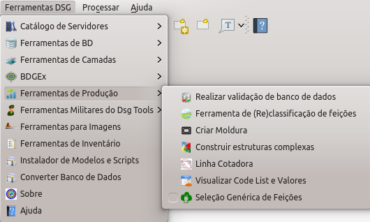

O DsgTools está construindo um conjunto de ferramentas de produção que possam auxiliar os usuários em suas atividades de produção de geoinformação. Abaixo é possível acessar a primeira ferramenta disponível. A ferramenta de reclassificação de feições.

Realizar validação de banco de dados
Ferramenta de (Re)classificação de feições
Construir estruturas complexas
Visualizador de Code List e Valores